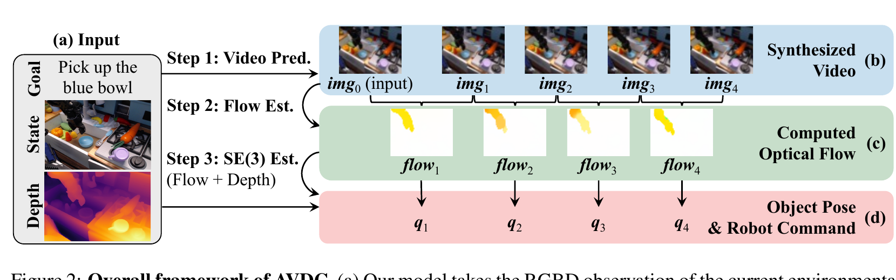

Learning to Act from Actionless Videos through Dense Correspondences
Po-Chen Ko 等 · ICLR 2024 · arXiv:2310.08576 · Zotero JPWFLNZS
AVDC 取消学习式 IDM：先生成任务视频，再从相邻帧估计光流；结合首帧深度把二维 dense correspondence 提升为三维刚体变换，最后用现成抓取/控制 primitive 执行。因此演示视频本身不需要动作标签。
§1 Introduction：为什么“会生成未来画面”仍然不等于“会控制机器人”
视频是很诱人的机器人学习数据：它同时记录场景变化、物体运动和交互结果，而且远比带动作标签的遥操作轨迹便宜。但视频策略遇到最后一公里问题——未来帧描述的是世界应该怎样变化，执行器需要的却是末端位姿、抓取状态或底盘命令。UniPi 用本体专用 IDM 填补这道缝，因此仍需昂贵动作标注。
AVDC 问得更激进：能否不学习 IDM，而从视频中的像素对应关系直接恢复可执行运动？它用文本条件视频模型生成“机器人成功执行任务”的短片，再以 dense optical flow 跟踪目标，结合深度和相机模型拟合 $SE(3)$ 变换，最后调用现成控制 primitive。省掉的是演示侧动作标签，不是部署侧的深度、标定、目标 mask 和控制工程。
展开原文 · 核心主张
“infer the closed-formed action ... without ... explicit action labels”
§2 Related Work：从 action-conditioned video 到 actionless geometry
早期视觉 MPC 往往训练 $p(x_{t+1}\mid x_t,a_t)$，动作监督从训练开始就存在；UniPi 等方法把视频 planner 与 learned IDM 分开，但 IDM 仍绑定特定机器人。AVDC 保留“先预测视觉未来”的级联范式，却用光流、深度反投影和刚体配准替代神经动作解码器。
它也不同于纯 imitation-from-observation：后者常学习跨域表征、奖励或潜动作，再用额外机器人交互接地；AVDC 把可执行性押在几何假设上。因此它在刚体搬运、推动和导航中很直接，但对柔性物体、严重遮挡、非刚性接触与生成视频的形变幻觉更脆弱。理解这点，才能看清“actionless”是监督形式的变化，不是机器人控制先验的消失。
§3 “Actionless” 指什么
§4 Video → Flow → Pose / Command

1. 观察当前 RGBD
读取场景、目标描述、相机内参与深度。
输入是什么：相机图像或视频，加上任务指令和机器人当前状态。它们还是原始观测，模型尚未把它们变成可用于预测或控制的特征。
这一步究竟做什么：本步骤执行“观察当前 RGBD”。具体来说，读取场景、目标描述、相机内参与深度。 这里处理的只是整条链路中的一个接口：把上一步的结果整理成下一步能够正确读取和继续计算的形式。
输出到哪里：经过本步骤处理、含义更明确的中间结果。这个结果会交给下一步“想象执行视频”继续处理。
为什么不能省略：它把未经处理的原始问题变成后续模块可以计算的输入，是整条链路的起点。
2. 想象执行视频
生成 $p(img_{1:T}\mid img_0,text)$。
输入是什么：来自上一步“观察当前 RGBD”的产物：经过本步骤处理、含义更明确的中间结果。本步骤还会按论文设置读取当前条件、时间步或训练信号。
这一步究竟做什么：本步骤执行“想象执行视频”。具体来说，生成 $p(img_{1:T}\mid img_0,text)$。 模型从相同起点产生候选未来，后续模块再检查这些未来是否符合条件、物理规律或动作需要。
输出到哪里：一个或多个候选未来、动作或轨迹，以及必要的中间状态。这个结果会交给下一步“提取 dense correspondence”继续处理。
为什么不能省略：机器人动作会改变下一次观测；只有执行后重新读取现实，才能发现预测误差并阻止错误连续累积。
3. 提取 dense correspondence
相邻帧光流追踪目标像素。
输入是什么：来自上一步“想象执行视频”的产物：一个或多个候选未来、动作或轨迹，以及必要的中间状态。本步骤还会按论文设置读取当前条件、时间步或训练信号。
这一步究竟做什么：本步骤执行“提取 dense correspondence”。具体来说，相邻帧光流追踪目标像素。 这里处理的只是整条链路中的一个接口：把上一步的结果整理成下一步能够正确读取和继续计算的形式。
输出到哪里：经过本步骤处理、含义更明确的中间结果。这个结果会交给下一步“解析求动作”继续处理。
为什么不能省略：它承担上下两步之间的接口；缺少它，前一步产生的信息无法以正确格式或正确含义传到下一步。
4. 解析求动作
拟合刚体变换并调用控制 primitive。
输入是什么：来自上一步“提取 dense correspondence”的产物：经过本步骤处理、含义更明确的中间结果。本步骤还会按论文设置读取当前条件、时间步或训练信号。
这一步究竟做什么：本步骤执行“解析求动作”。具体来说，拟合刚体变换并调用控制 primitive。 它把真实世界素材转换为既能渲染外观、又能与物理模块对齐的数字表示。
输出到哪里：经过本步骤处理、含义更明确的中间结果。这是图中这条链路的最终产物，随后会进入真实执行、模型更新或指标评测。
为什么不能省略：它把前面得到的内部结果落实为可执行动作、可训练模型或可解释指标，完成从方法到结果的最后一步。
§5 视频生成与光流
- $img_{1:T}$
- 待生成的未来视频序列；$img_0$ 是已知起始观测，text 是任务条件。
- $\sqrt{1-\beta_t}img+\sqrt{\beta_t}\epsilon$
- 在随机噪声等级 $t$ 构造带噪未来视频，让网络覆盖从轻噪声到重噪声的恢复问题。
- $\epsilon_\theta(\cdot)$
- 条件视频模型预测注入噪声；MSE 训练的是“什么未来既符合起点与文本，又位于视频数据分布”。
- 对控制的限制
- 该损失只保证视觉未来，动作仍需 AVDC 的动力学/控制模块从预测轨迹中取回。
论文尝试过预先计算 flow 后直接建模，但光流往往稀疏且分布不平滑，Gaussian diffusion 难优化；最终保留“先 RGB 视频、再 GMFlow”的两段方案。
§6 从 2D 对应点拟合 3D 刚体变换
- $x_i$
- 由首帧深度与目标 mask 反投影得到的 3D 点。
- $(u_i^t,v_i^t)$
- 光流追踪到第 $t$ 帧的二维位置。
- $T_t$
- 假设目标是刚体，求使投影匹配的 $SE(3)$ 变换。
§7 证据与局限
§8 实验归因与复现：把四段误差拆开测
最小可信复现清单
- 视频模型的帧间隔必须与机器人控制 primitive 的运动尺度匹配。
- 明确深度来自真实传感器还是估计器，相机内外参如何获得。
- 说明目标 mask、种子点和异常 correspondence 的筛选方法。
- 给出无 RANSAC、无深度、真实未来帧等诊断对照。
- 记录每段推理延迟，尤其视频去噪和 dense flow 的串行成本。
AVDC 用可解释几何换掉 learned IDM；它降低动作标注成本，却把适用边界写进了深度质量、标定精度与刚体假设。